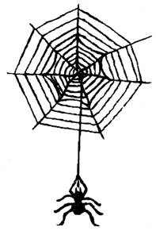

众所周知，在世界各民族之中，中华民族是一个爱好和平的民族，中国传统文化也以尊礼义、重文治为特征。然而，这并不排斥中国人的尚武精神。相反，与这种温文儒雅的主流文化相对应，在中国民间，却自古至今都流行着一种浓烈的尚武尊侠的文化习俗。而作为中华民族主干之一并被尊为赫赫"国姓"的朱氏族姓，就是中华民族尚武精神的典范。
朱姓以武著称于世，而其尚武重侠的传统，大概可以溯源到远古东夷集团中那个崇拜蜘蛛图腾的邾氏族。
蜘蛛的形象，在中国人的心目中是极为凶猛的。朱姓崇拜蜘蛛，并以这种凶猛的小动物作为氏族徽记，这绝非一种偶然的选择。这应该就是朱姓的原始祖先们崇尚凶猛勇武的结果。他们以蜘蛛为图腾，就是要激励族人像蜘蛛那样凶猛顽强，勇于拼搏。这就是原始的尚武精神。
再说，在中国古代氏族部落集团中，邾人所属的东夷集团正是以尚武好战著称于世的。无论是原始的邾氏族还是后来被周王朝封于此地的曹姓邾氏，在长期的浸染和同化后，他们都无疑会带有东夷民族尚武好勇的烙印。
在中国人的观念中，武与侠往往是联在一起的。"侠"是武的同义词，甚至是武的升华。武侠武侠，尚武勇者往往就意谓着行侠仗义，所以才有武侠这个词。朱姓崇尚武勇，在这种家族精神的影响下，又导致历史上朱姓的另一个特征：尚侠。可以说，尚侠的家风是朱姓尚武精神的伴生物。
一个有趣的现象是：被朱姓推为得姓鼻祖的古邾子国开国之君，其名字就叫朱侠。朱姓以尊武尚侠为家风，而开山始祖的名字就叫"侠"，不知这是一种历史的巧合，还是另有其内在的联系或神秘的含义。然而作为邾侠的主要后裔，朱姓正是继承和发扬了尊武尚侠的传统。
在中国历史上，朱姓最初是以武著称于世的。人们一提到早期的朱姓，往往就会联想到朱亥、朱家和六朝时期那个作为江南吴姓之首的庞大的吴郡朱氏家族。
朱亥，这个历史上最早的朱姓名人，正是中国文化中大能士、大侠客的典型。你看他，屠夫出身，袖中藏着40斤重的大铁锥用作武器，多么的孔武有力啊!
正是因为朱姓以尚武重侠著称，所以伟大的史学家太史公司马迁才将朱姓的大侠士朱家列名《史记·游侠列传》之首。能得太史公如此褒扬，可见尊尚武侠的精神，早在秦汉之际便已成为朱姓的家族精神并广为世人所认同了。
汉魏六朝时期，朱姓更是将尊武尚侠的精神，大大地发扬起来。因而，这个时期的朱姓，不但武将辈出，侠客代生，而且形成了六朝时期中国历史上最庞大的武士家族。也正是从这时期起，尚武作为朱姓的特点，便为举世所知。
查证史书，我们便会发现，汉魏六朝时期朱姓人物，绝大部分是武士或侠客，如鄢陵侯朱濞、都昌侯朱轸、吴国的朱桓、朱异、朱据、朱治、朱然、朱龄石，都是以武功起家的良将，甚至那位以学问著名于世的大名士平陵人朱云，最初也是侠客出身。
在六朝门阀制度盛兴的时候，朱姓被尊为东南吴姓四大族之首，《新唐书·柳冲传》说："东南则为吴姓，朱、张、顾、陆为大。"而这个名扬天下的大姓吴郡朱氏，正是以尚武为特色，因此《新唐书》和此前的《世说新语》在评价东南四大姓时，便有"朱武，张文，陆忠，顾厚"的明确说法(见《南海九江朱氏家谱·姓族源流》)。可见，当时在世人的心目中，已经把"武"看成了朱姓有别于其他巨姓贵族的标志。
整个隋唐以前的朱姓，可以说都是以军事贵族或者说武士宗族的面目出现的。这个时候的朱姓以尊武尚侠为家风自不待说。随唐以后，朱姓逐渐由军事贵族型向文化与政治贵族型转变，这个时期的朱姓是否放弃了武的家族传统呢?答案是否定的。据笔者的研究，朱姓自始至今，都保持了尚武的宗族精神，而且还把这一传统进行了发扬和光大。
唐五代时期，朱姓虽产生了非武功起家的宰相永城朱敬则家族，但像割据称王的朱泚家族，后梁皇家室砀山朱温家族，都是以军功起家并因此名留正史的军事贵族。
宋明之世，朱姓已完成由军事贵族向文化与政治型贵族的演变，但即使是作为中国儒家礼教文化代表的朱熹朱老夫子，他所出生的家族也正是一个以军功起家的军事贵族。而朱熹在谈到他家的历史时，也以此为荣，把那位镇戍婺源的茶院制置使朱环奉为开派始祖。不但如此，朱老先生似乎还有意无意地把自己家族向历史上的军事巨族吴郡朱氏靠拢，说自家"望出吴郡"，想沾上尚武的荣光。几百年后，凤阳朱氏的朱元璋建立了明朝。而这个一统中国数百年的大明国姓--凤阳朱氏，正是以武功起家打得江山，并自始至终守住了尚武的家风。明王朝一改宋朝的文弱形象，尚武强兵，驱除鞑子，抗击蒙古，大兴武功，威震天下。甚至还派郑和舰队几下南洋，使中华帝国威名远扬世界。当此之时，尚武的精神，已由朱姓的家族精神，被宏扬、升华为整个中华民族的国家精神。正是在这种尚武的精神激励下，当满清入侵中原后，各地朱氏族人特别是皇族成员，纷纷起兵抗清，保家卫国。
清朝定鼎之后，全国各地，仍有许多朱姓宗贤，以尚武精神为号召，前赴后继，揭竿而起，如台湾的朱一贵，即是其中典型。而在以尚侠尊武为宗旨的近代中国最大的秘密江湖组织"天地会"(也即洪门、袍哥、汉留等)中，也奉朱姓的朱洪英为开帮大始祖之一。
无独有偶，发展至近代，朱氏族姓又孕育出一位伟大的军事家--朱德。"朱毛"军队，为中国共产党打下第一块根据地，朱总司令成为当代中国最伟大的军事家、十大元帅之首、人民共和国的开国元勋。这应该是朱姓尚武精神在现代最完美的体现和宏扬。
|